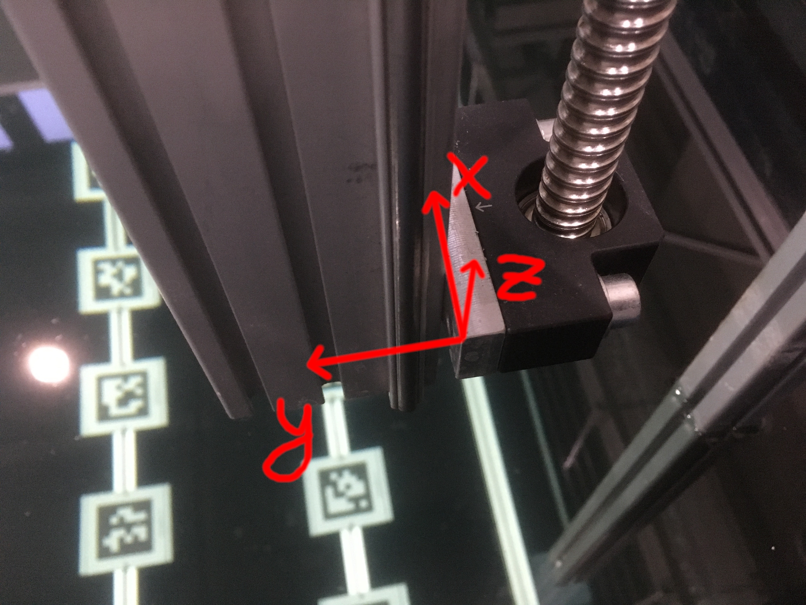

6.1. General Information
6.1.1. Coordinate System
The reference point of the gantry is the edge of the z-axis spindle mount as depicted in the image below.
The offset to the tank’s coordinate system is measured relative to the tank’s walls (not the steel frame).
According to the localization package the offset in x-direction is 0.144m and 0.342m in y-direction.
6.1.2. Motion Controllers
The x- and z-axis are driven by Motion Controllers V1.0. The manual of these controllers is hard to come by these days. So here is the PDF. The y-axis has a newer conroller. Probably V2.5. Faulhaber has an Application Note AN103 describing the differences between the older and the newer controller types. Can’t say it is of much use (Lennart)
Note
If you use the Motion Manager, keep in mind that you need Motion Manager 5 for the older MCs instead of version 6.
6.1.3. Motors
The axes are driven by Faulhaber motors. For the x- and z-axis the motor model is 3564k024b. The nominal rotational speed is 7700 RPM (datasheet). The y-axis is driven by a newer model of the 3268 BX4 series. Its nominal rotational speed is 4890 (datasheet).